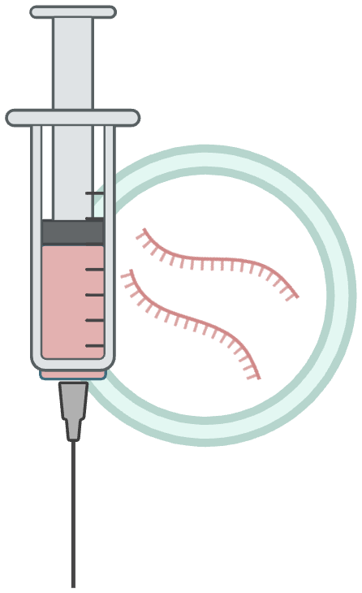
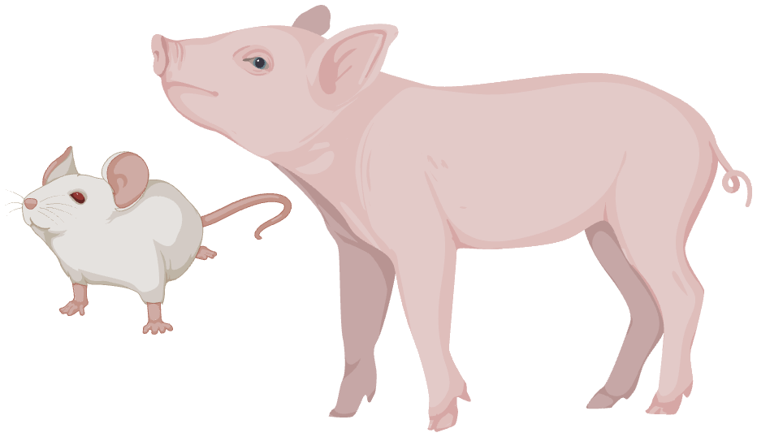
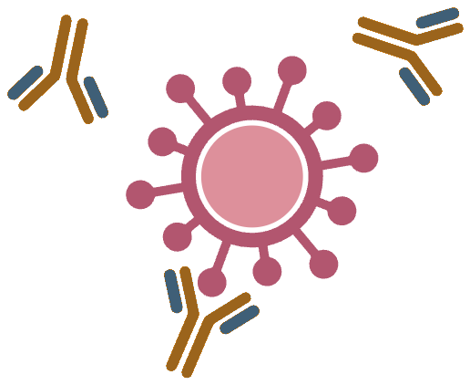
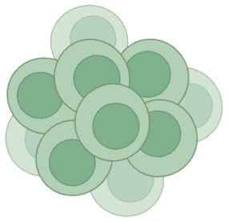

RNA virus
Influenza A virus
Vaccine development for highly pathogenic avian influenza, swine IAV characterization, and genomic surveillance.
PapersPhD Candidate at University of Nebraska-Lincoln | DVM | M.S. in Veterinary Science | Vaccine Development | Immunogenomics | Viral Genomics

Lipid nanoparticles (LNPs)


Humoral immune response

Cellular immune response
My research focuses on vaccine development against highly pathogenic viral diseases in animals, including highly pathogenic avian influenza virus (HPAIV) and African swine fever virus (ASFV). I develop and evaluate lipid nanoparticle (LNP)-based vaccine platforms and characterize humoral and cellular immune responses to assess vaccine efficacy and protection against viral challenge in animal models.
I also investigate host immune responses at the molecular and immunogenomic levels, integrating host mRNA expression, B-cell receptor (BCR), and T-cell receptor (TCR) repertoire profiling to understand the mechanisms underlying protective vaccine-induced immunity.
RNA virus
Vaccine development for highly pathogenic avian influenza, swine IAV characterization, and genomic surveillance.
PapersDNA virus
Vaccine antibody landscapes, pen-side diagnostics, and cell-line tools for ASFV isolation and evaluation.
PapersRNA virus
Structural-protein antibody mapping, LIPS/LACA/ELISA platforms, and nanopore metagenomics.
PapersAppointments
Research roles across veterinary biotechnology, viral immunology, and vaccine evaluation in Vietnam and the United States.
Training
Doctoral training in integrative biomedical sciences, building on veterinary medical and graduate study in Vietnam.
Scholarship
Peer-reviewed work on ASFV diagnostics, vaccine antibody landscapes, and PRRSV structural-protein responses.
Archives of Virology, 2024 · Vu, Luong, et al.
Vaccines, 2023 · Luong et al. (first author)
Virus Research, 2022 · Luong et al. (first author)
Vaccines, 2020 · Luong et al. (first author)
Toolkit
Molecular biology · Sequencing · Viral infection assays · Viral immunology · Cell culture · Histology · Microscopy · Bioinformatics · Nanopore metagenomics
Connect
Open to scientific collaboration on viral immunology, vaccine evaluation, and veterinary pathogen diagnostics.